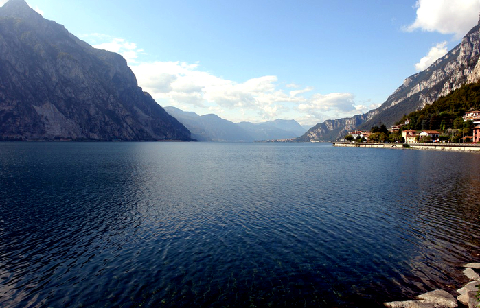
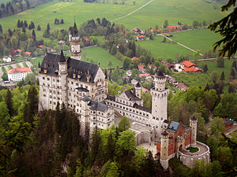
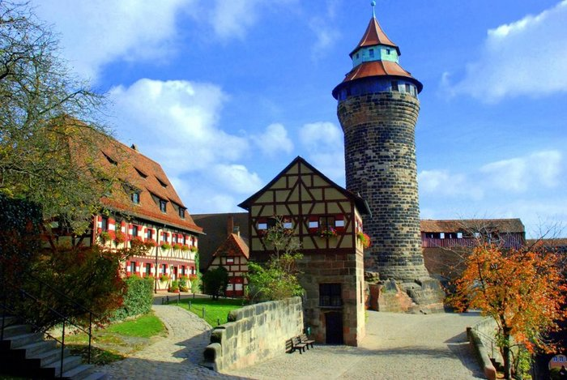

Бава́рия (нем. Bayern) — земля на юге и юго-востоке Федеративной Республики Германия (ФРГ), является самой большой по площади землёй в составе ФРГ. Административное деление: семь административных округов — Верхняя Франкония, Средняя Франкония, Нижняя Франкония, Верхний Пфальц, Нижняя Бавария, Верхняя Бавария, Швабия. Столица — город Мюнхен. Основу населения составляют три народности — баварцы, франконцы, швабы. Региональный шифр земли — 09.
Бава́рия (нем. Bayern) — земля на юге и юго-востоке Федеративной Республики Германия (ФРГ), является самой большой по площади землёй в составе ФРГ. Административное деление: семь административных округов — Верхняя Франкония, Средняя Франкония, Нижняя Франкония, Верхний Пфальц, Нижняя Бавария, Верхняя Бавария, Швабия. Столица — город Мюнхен. Основу населения составляют три народности — баварцы, франконцы, швабы. Региональный шифр земли — 09.
| Страна | Германия |
| Земля | Бавария |
| Координаты | 52°31′00″ с. ш. 13°23′00″ в. д.HGЯO |
| Внутреннее деление | 10 округов, 87 районов |
| Официальный язык | Немецкий |
| Площадь | 786,85 км² |
| Высота НУМ | 35—115 м |
| Население | 3 125 655 человек (2015) |
| Плотность | 2834 чел./км² |
| Агломерация | 3 456 193 |
| Часовой пояс | UTC+1, летом UTC+2 |
| Телефонный код | +49 20 |
| Официальный сайт | bayern.de |
Что посетить?
Боденское озеро (Bodensee), также известное, как озеро Констанц, — третье по величине озеро Центральной Европы, питаемое водами полноводного Рейна. Сразу три страны расположились на живописных берегах Бодензее: Германия, Австрия и Швейцария — и каждая извлекает туристическую выгоду из этого положения. Жители Германии с завидным постоянством приезжают отдыхать в Констанц, Меерсбург, Юберлинген и Линдау, а австрийцы гремят на весь мир знаменитым Брегенцским оперным фестивалем, сцена которого находится аккурат на водной глади Боденского озера. Популярные курорты и тихие деревушки, широкие возможности для активного отдыха и лечения, а также немалое количество культурных достопримечательностей — всё найдётся на его гостеприимных берегах.
Нюрнбергская крепость.Эта крепость — собирательное название трех сооружений, предназначавшихся для обороны города. В комплекс входят Императорский замок, крепость имперского города и крепость бургграфа. От крепости бургграфа мало что осталось. Самое старое здание — Пятиугольная башня, которая была построена в 11 веке. Для туристов интересна капелла святой Вальпургии, где сегодня проводятся богослужения.
За последние годы при исследованиях захоронений на территории крепости были найдены следы поселений, основанных ранее 1000 г. (ранее считалось, что заселение вершины крепостной горы началось в первом или втором столетии второго тысячелетия). При этом был обнаружен фундамент круглой сторожевой башни с толщиною стен свыше двух метров, который представителями Баварского управления культурным наследием был датирован около 1000 года н. э.
Замок Нойшванштайн (буквально: «Новый лебединый камень (утёс)») — романтический замок баварского короля Людвига II около городка Фюссен и замка Хоэншвангау в юго-западной Баварии, недалеко от австрийской границы. Одно из самых популярных среди туристов мест на юге Германии.
Самое величественное и прекрасное в интерьере замка — спроектированные по согласованию с самим Королем Людвигом II королевские покои и просторные залы. Тут четко прослеживается увлеченность монарха немецкой литературой и фольклором. Стены замка расписаны отрывками из «Саги о Лоэнгрине», маленький грот выполнен в стиле грота Венеры из произведения «Поэма о Тангейзере». Песенные и праздничные залы выполнены по мотивам «Легенды о Парцифале». И только лишь в королевской спальне можно заметить отличные от других залов готические нотки.
Где поспать в Баварии?
В Баварии удобно остановиться в одном из новых отелей, которые недавно появились рядом с автобусной станцией. Здесь же находится остановка метро или как его называют в Германии - Убана (U-Bahn). Стоимость проживания в отеле, в принципе, не зависит от места его расположения в городе. В любом районе есть свои плюсы и преимущества: важно, чтобы недалеко от отеля находиласт станция метро, тогда вы сможете легко и быстро добраться в любой уголок города. Для того, чтобы получить самую привлекательную цену на проживание, следует сравнить цены на туристических сайтах с теми, которые выставлены на сайте отеля. Нередко, в отелях гостиничной сети Ibis Баварские пивоварни считаются одними из лучших, а по всему Мюнхену открыта сеть знаменитых Buergarten, популярных и среди туристов, и среди местных жителей. Бокал пива обойдется здесь около 4 евро, а для желающих покушать есть разнообразное мясное меню, знаменитые мюнхенские сосиски, тушеная капуста, запеченная поросячья ножка. Цена большой порции – около 30 евро.и В & В, Holliday Inn выгоднее бронировать номер именно на туристических сайтах, где стоимость бывает существенно ниже, чем если бы вы пришли в отель просто с улицы. Если вы не забронировали места в отеле заблаговременно, то можно из лобби отеля выйти в интернет со своего смартфона или с компьютера, который почти во всех отелях расположен возле рисепшн, чтобы постояльцы всегда могли проверить свой почтовый ящик, поискать нужную информацию и т.д.БикЮ
Что тут поесть и попробовать?
Недорого перекусить во время прогулок по Мюнхену можно в «Burger House» (Rablstr 37|Eingang Franziskaner Strasse). Большой выбор разнообразных чизбургеров с мясом, сыром, луком и свеклой, а также горячие хрустящие булочки, салаты из свежих овощей, вкусное жаркое, сендвичи. Из напитков следует попробовать имбирное пиво. Счет около 10-25 евро рестораны Мюнхена Pfistermuhle «Pfistermuhle» (Pfisterstrasse 4) предлагает туристам блюда традиционной немецкой кухни. Здесь обязательно нужно попробовать баварские колбаски с солеными хлебцами и белым пивом. В меню также суп с домашними фрикадельками и цуккини, запеченный кролик, телятина с овощами. Возможно размещение на открытом воздухе. Приятная атмосфера, доброжелательное отношение персонала располагают к неспешному ужину вдвоем. Средний счет около 40 евро. Расположенный в самом центре Мюнхена, в старинном здании, ресторан «Wirtshaus Zum Straubinger» (Blumenstr 5) привлекает гостей разнообразным меню, семейными комплексными обедами, хорошей картой вин. Здесь можно выбрать столик на улице, в окружении небольшого уютного сада, и попробовать отлично приготовленную свиную ногу, жареные сосиски, утку, гуляш, свинину с клецками. Прекрасное нефильтрованное пиво, различные пивные коктейли. Блюда около 10-12 евро, пиво – 3-4 евро. немецкая кухня Мюнхен le crobag Но не только пивом славен кулинарный Мюнхен, также невозможно пропустить его потрясающие кондитерские. В кафе «Le Crobag» (Bahnhofplatz 2), недалеко от центрального вокзала вам предложат выпечку и десерты, свежие и вкусные шоколадные булочки, клубничные и яблочные штрудели, пирожные, кофе и мороженое. Средняя цена 3-5 евро.
Фото:
  